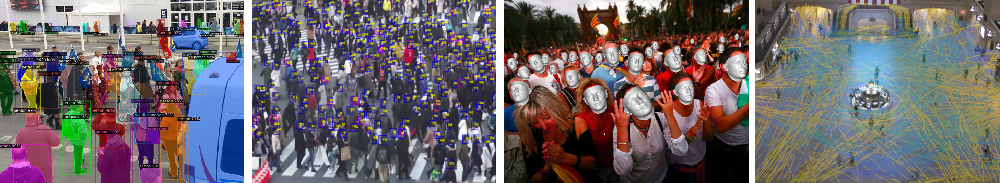

The Multimodal Simulation Lab (MSLab) invites applications from highly motivated candidates for fully-funded PhD positions in the areas Machine Learning, Computer Vision, and Physics-Based Simulation for 3D human modeling and understanding of crowds. The position is funded by the H2020 FetOpen project CrowdDNA.
Successful candidates will work under the supervision of Prof. Dan Casas, and should have
Succesful candidates are expected to work on cutting-edge research on data-driven methods for 3D modeling of human interactions and crowd analysis. Succesful candidates are expected learn to do basic research, read and write technical papers, and write project deliverables, among other tasks. Our target venues include top Computer Vision and Graphics conferences such as CVPR, ECCV, ICCV, Eurographics, and ACM SIGGRAPH.
CrowdDNA aims to enable a new generation of crowd technologies, i.e., a system that can prevent deaths, minimize discomfort and maximize efficiency in the management of crowds. It performs an analysis of crowd behavior to estimate the characteristics essential to understand its current state and predict its evolution. The main idea behind CrowdDNA is that analysis of new kind of macroscopic features of a crowd –such as the apparent motion field that can be efficiently measured in real mass events– can reveal valuable information about its internal structure, provide a precise estimate of a crowd state at the microscopic level, and more importantly, predict its potential to generate dangerous crowd movements. This way of understanding low-level states from high-level observations is similar to that humans can tell a lot about the physical properties of a given object just by looking at it. CrowdDNA challenges the existing paradigms which rely on simulation technologies to analyze and predict crowds, and also require complex estimations of many features such as density, counting or individual features to calibrate simulations. This vision raises one main scientific challenge, which can be summarized as the need for a deep understanding of the numerical relations between the local –microscopic– scale of crowd behaviors (e.g., contact and pushes at the limb scale) and the global –macroscopic– scale, i.e., the entire crowd.
We offer a 3-year fully-funded PhD position, with a gross salary of 22,400 €/year. The salary includes social and health benefits. We also provide funding for registration and travel expenses to attend academic conferences.
Candidates must hold an M.Sc in Computer Science, Mathematics, or related areas, and have a high communication skills in English, both writing and speaking.
The tentative starting date is late 2021. Applicants interested should send the following documentation to dan.casas@urjc.es.